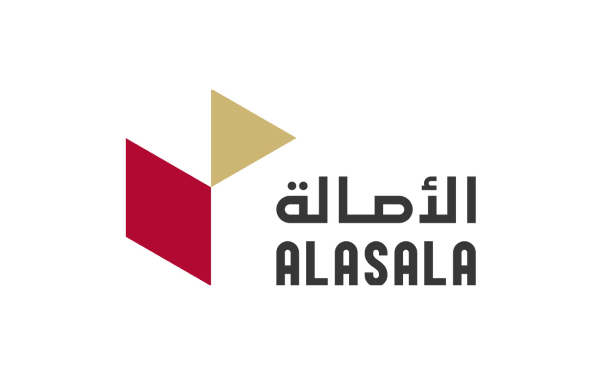

كليات الأصالة – منصة الاختبارات
الرئيسية
تعليمات سريعة
دخول أعضاء هيئة التدريس
تواصل مع الإدارة
الإدارة
تعليمات سريعة
سجّل الدخول أو أنشئ حسابًا جديدًا (يتطلب موافقة الإدارة).
أنشئ اختبارك من لوحة الإنشاء واختر نوع الأسئلة والمدة.
انسخ رابط الطالب وشاركه معهم.
ستصل النتائج تلقائيًا إلى ملفك مع ملاحظة خروج الطالب إن حدثت.